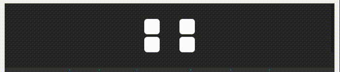
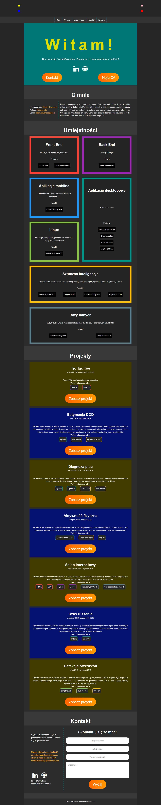
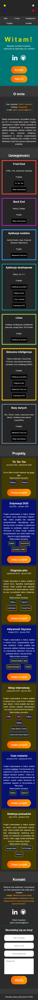

Projekt został stworzony w trakcie kursu programowania webowego CodersCamp. Celem projektu było stworzenie strony - wizytówki z zastosowaniem HTML i CSS. Strona stanowi portfolio opisujące moje umiejętności i projekty związane z programowaniem. Stronę można zobaczyć pod linkiem ......



Każda kategoria zawiera obramowanie o unikalnym kolorze, listę umiejętności oraz projektów z nią powiązanych. Po kliknięciu w projekt następuje przeniesienie do danego projektu w sekcji Projekty.

Każdy projekt zawiera czas wykonywania, opis, listę zastosowanych umiejętności/narzędzi (kolor obramowania wskazuje na kategorię do której dana umiejętność/narzędzie należy) oraz przycisk odsyłający do odpowiedniego repozytorium na GitHubie. Po kliknięciu w umiejętność/narzędzie następuje przeniesienie do kategorii do której należy dana umiejętność/narzędzie. Po kliknięciu w przycisk "Zobacz projekt" zostaje otwarte repozytorium danego projektu w nowej karcie w przeglądarki.


Wysłanie formularza powoduje jedynie przeładowanie strony)


